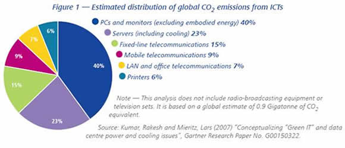
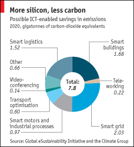

Computing in a Changing Climate
November 21, 2014
In the wake of the agreement between China and the United States to curb carbon emissions, it seems both relevant and necessary to turn to how our own particular segment of society is contributing to climate change. A report from the Global eSustainability Initiative (GeSI) released in 2008 shows that information and communications technologies (ICT) are on par wth aviation in terms of carbon emissions. This is equivalent to 2–2.5% of total emissions from human activity. The total includes emissions from ICT companies, as well as from energy consumed by ICT equipment. ICT usage is expected to expand rapidly in the coming decades, especially in developing countries. While PCs, mobile phones, and networks account for the majority of emissions, data centers are the fastest growing contributor. If nothing is done, the ICT contribution to global emissions is expected to double to 4% by 2020.
The good news is that ICT companies are already taking steps to reduce their energy consumption as well as provide more energy-efficient products. As such, ICT equipment is currently experiencing an annual energy reduction of 10–20%, meaning devices are requiring less energy to function and thus emitting less carbon during use. According to most studies, even in the face of increased internet usage, cloud storage, and the sheer number of devices connected to such networks (increasing from about 10 billion today to 50 billion by 2020), current efforts to reduce energy consumption will enable the ICT industry to maintain its current emissions profile over the next decade. But is that enough?
One upside to increased ICT usage is the potential for it to reduce emissions in other segments of society. This "enabling effect" has the potential to reduce emissions in other industries by 15% by 2020–equivalent to five times ICT's own carbon footprint. These enabling effects range from reducing transport emissions by replacing face-to-face meetings with videoconferencing, to using computers to improve logistics (think delivery trucks with a more efficient delivery path), to "smart" electrical grids reducing unnecessary energy consumption, to "smart" buildings able to reduce lighting and heating/cooling needs.
If we really want to see a paradigm shift in way the ICT industry tackles climate change, we need more transparency. Specifically, we need the environmental footprint of the final product to be transparent to consumers. Apple CEO Tim Cook recently spoke with UN Framework Conventon on Climate Change Executive Secretary Christina Figueres at Climate Week NYC to discuss Apple's concerns with climate change. He said: "I think companies have to communicate, to consumers, about what they’re selling, and they have to do it in a way that communicates the whole of their footprint, and not just the one part they’re looking good on, but all of it. And I think that if you do, I’m an optimist, I think that if you do that consumers are smart and the vast majority of the world wants to do the right thing, so I think [transparency] will drive desired consumer behavior. If you have enough companies that begin to do that, I think consumers will vote with their dollars." The more transparent a product is in its environmental impact, the more informed a choice consumers can make when purchasing a product. And as recent public opinion polls show, nearly half (48%) of Americans think that climate change is a major threat. It is only natural that this concern would translate into dollar voting. Indeed, in a time of likely inaction by state actors, the individual is left with little means to influence climate change other than voting with their dollar. As such, greater transparency in the environmental record of products will drive consumers toward greener products, which in turn will drive producers toward greener products. That is not to say that we do not need state action, such as regulations and standards, to promote greener products. We need to throw everything we've got at climate change. There is no silver bullet. We need both top-down and bottom-up action to create the paradigm shift we need to reduce carbon emissions.
References